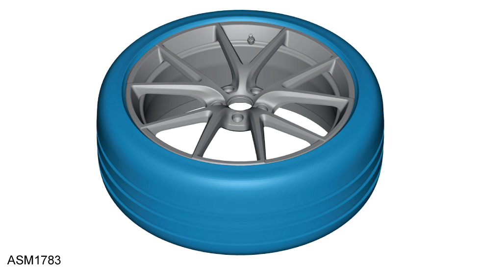
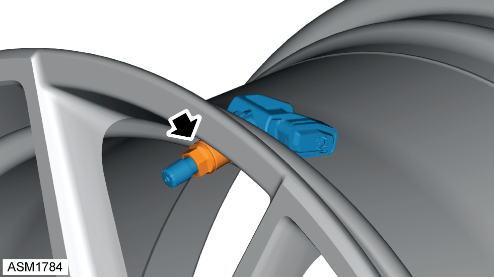
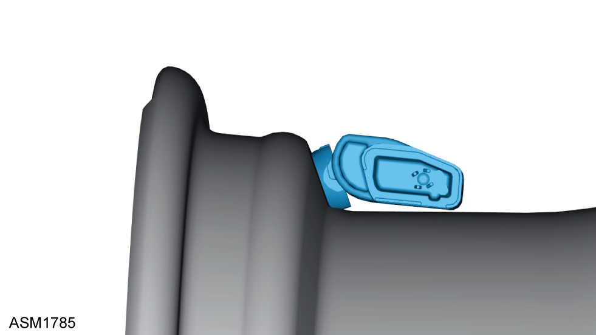

TPMS Transmitter / Valve Assembly
Print
Operation Code: 34.01.07-02
Removal
- Remove wheel. Refer to procedure.
- Remove core from transmitter/valve assembly and deflate tyre.

- Using a suitable tyre changing machine, detach inner and outer tyre sidewall beads in diametrically opposite positions to transmitter/valve assembly.
NOTE: Do not use mechanical/pneumatic bead breaker within a zone of 20 degrees on either side of transmitter/valve assembly.
- Place tyre changers removal/fitment adaptor tool 20 degrees after the transmitter/valve assembly.
NOTE: Ensure that inner and outer sidewalls of tyre are completely detached from wheel rim before clamping tyre/wheel assembly onto tyre changing tool and placing tyre bead removal/fitment adaptor tool between tyre and wheel rim.
NOTE: Do not place any other tools or bars between shoe and transmitter/valve assembly.
- Remove outer tyre sidewall from wheel rim whilst maintaining bead of opposite sidewall on bottom of bead seat and without changing direction of rotation of tyre changers removal/fitment adaptor tool until outer sidewall is completely removed from wheel rim.
- Repeat step 5 for inner tyre sidewall.
- Remove tyre.

- Remove and discard valve nut.
- Remove transmitter/valve assembly.
Installation

- Install transmitter/valve assembly.
NOTE: Ensure base of transmitter/valve assembly is facing towards wheel rim with small hole for pressure measurement facing upwards towards tyre and valve stem sealing ring is still partially inside valve hole.
- Install new nut onto transmitter/valve assembly stem finger tight only until plastic collar of nut touches valve seat and wheel rim.
NOTE: Apply finger pressure to transmitter/valve assembly housing to hold it against wheel rim.
- Tighten nut using a suitable hand operated torque wrench with an 11 mm socket. Torque 4 Nm.
NOTE: Ensure two mounting feet of transmitter/valve assembly are still in contact with wheel rim once valve nut has been tightened.
- Install tyre to wheel.
 CAUTION: Ensure that no tyre lubrication products partially or completely cover pressure measuring hole or inflation hole of wheel assembly.
CAUTION: Ensure that no tyre lubrication products partially or completely cover pressure measuring hole or inflation hole of wheel assembly.
CAUTION: Tyre must not come into contact with transmitter/valve assembly during installation.
CAUTION: Ensure that tyre does not get trapped between wheel rim and transmitter/valve assembly.
NOTE: Only plastic valve caps should be fitted to a TPMS tyre valve. A metal cap may cause galvanic corrosion between metal cap and stem of aluminium valve.
Configuration
- Drive vehicle for 4 to 10 minutes at speeds between 15 to 44 mph.
CAUTION: The ignition cannot be turned off until configuration has been successfully completed. Turning off ignition prior to this will result in configuration procedure having to be repeated.
NOTE: Vehicle does not have to be moving constantly during this process, but only continuous driving periods of 60 seconds or more within this speed range will allow TPMS transmitter to be successfully configured.
NOTE: When TPMS transmitter is successfully configured, tyre pressure will be displayed and warning symbol / tell tale light will extinguish.